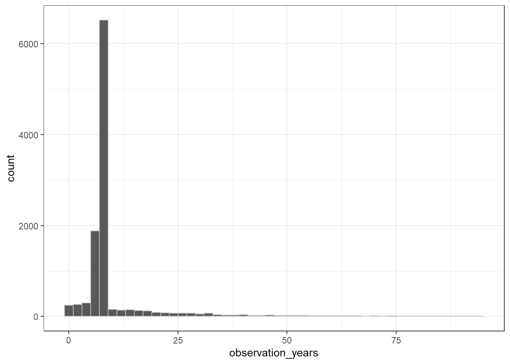
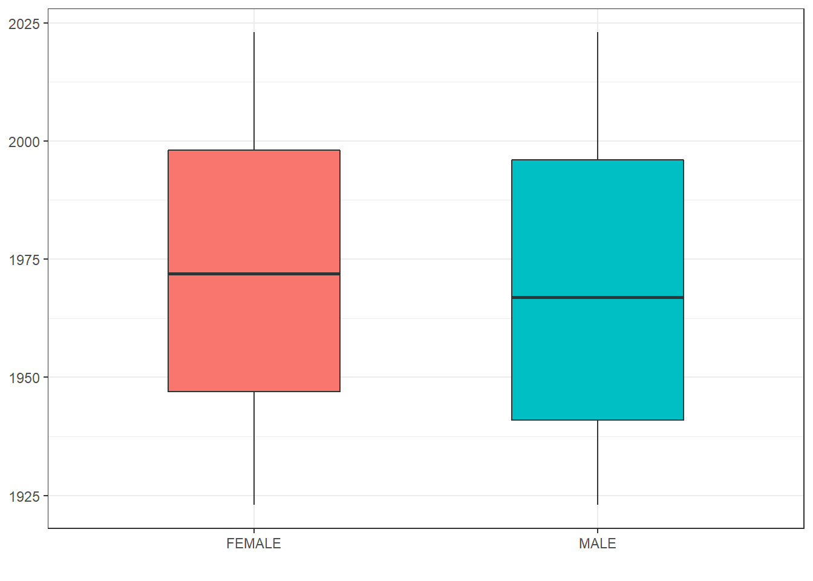

library(dbplyr)
library(dplyr)
library(CDMConnector)
library(ggplot2)3 Exploring the CDM
Let’s first connect again to our Eunomia data and create the reference to the common data model.
db <- DBI::dbConnect(duckdb::duckdb(),
dbdir = CDMConnector::eunomia_dir())
cdm <- cdm_from_con(db, cdm_schema = "main")3.1 Vocabulary tables
ADD SOME INTRODUCTION TO THE VOCAB TABLES
cdm$concept %>%
glimpse()Rows: ??
Columns: 10
Database: DuckDB 0.5.1 [edbur@Windows 10 x64:R 4.2.1/C:\Users\edbur\AppData\Local\Temp\RtmpaqH8R0/zjntpkde]
$ concept_id <dbl> 35208414, 1118088, 40213201, 1557272, 4336464, 429588…
$ concept_name <chr> "Gastrointestinal hemorrhage, unspecified", "celecoxi…
$ domain_id <chr> "Condition", "Drug", "Drug", "Drug", "Procedure", "Pr…
$ vocabulary_id <chr> "ICD10CM", "RxNorm", "CVX", "RxNorm", "SNOMED", "SNOM…
$ concept_class_id <chr> "4-char billing code", "Branded Drug", "CVX", "Ingred…
$ standard_concept <chr> NA, "S", "S", "S", "S", "S", "S", "S", NA, NA, "S", "…
$ concept_code <chr> "K92.2", "213469", "33", "46041", "232717009", "76601…
$ valid_start_date <date> 2007-01-01, 1970-01-01, 2008-12-01, 1970-01-01, 1970…
$ valid_end_date <date> 2099-12-31, 2099-12-31, 2099-12-31, 2099-12-31, 2099…
$ invalid_reason <lgl> NA, NA, NA, NA, NA, NA, NA, NA, NA, NA, NA, NA, NA, N…3.2 Counting people
The OMOP CDM is person-centric, with the person table containing records to uniquely identify each person in the database. As each row refers to a unique person, we can quickly get a count of the number of individuals in the database like so
cdm$person %>%
count() %>%
pull()[1] 2694The person table also contains some demographic information, including a gender_concept_id for each person. We can get a count grouped by this variable, but as this uses a concept we’ll also need to join to the concept table to get the corresponding concept name for each concept id.
cdm$person %>%
group_by(gender_concept_id) %>%
count() %>%
left_join(cdm$concept,
by=c("gender_concept_id" = "concept_id")) %>%
select("gender_concept_id", "concept_name", "n") %>%
collect()# A tibble: 2 × 3
gender_concept_id concept_name n
<dbl> <chr> <dbl>
1 8532 FEMALE 1373
2 8507 MALE 1321The observation period table contains records indicating spans of time over which clinical events can be reliably observed for the people in the person table. Someone can potentially have multiple observation periods. So say we wanted a count of people grouped by the year during which their first observation period started. We could do this like so:
first_observation_period <- cdm$observation_period %>%
group_by(person_id) %>%
filter(dplyr::row_number() == 1) %>%
compute()
cdm$person %>%
left_join(first_observation_period,
by = "person_id") %>%
mutate(observation_period_start_year=year(observation_period_start_date)) %>%
group_by(observation_period_start_year) %>%
count() %>%
collect() %>%
ggplot() +
geom_col(aes(observation_period_start_year, n)) +
theme_bw()
To compute or not to compute
The compute() function will force the computation of a query. In the example above we use it to split up two queries; the first to keep the first observation period record for each individual.
cdm$observation_period %>%
group_by(person_id) %>%
filter(dplyr::row_number() == 1) %>%
show_query()<SQL>
SELECT
observation_period_id,
person_id,
observation_period_start_date,
observation_period_end_date,
period_type_concept_id
FROM (
SELECT *, ROW_NUMBER() OVER (PARTITION BY person_id) AS q03
FROM main.observation_period
) q01
WHERE (q03 = 1.0)Followed by a second query that left joins the person table with the result from the first (which is now in a temporary table), followed by extracted the year in which peoples first observation period starts and then, finally, a count by year.
cdm$person %>%
left_join(first_observation_period,
by = "person_id") %>%
mutate(observation_period_start_year=year(observation_period_start_date)) %>%
group_by(observation_period_start_year) %>%
count() %>%
show_query()<SQL>
SELECT observation_period_start_year, COUNT(*) AS n
FROM (
SELECT
*,
EXTRACT(year FROM observation_period_start_date) AS observation_period_start_year
FROM (
SELECT
LHS.person_id AS person_id,
gender_concept_id,
year_of_birth,
month_of_birth,
day_of_birth,
birth_datetime,
race_concept_id,
ethnicity_concept_id,
location_id,
provider_id,
care_site_id,
person_source_value,
gender_source_value,
gender_source_concept_id,
race_source_value,
race_source_concept_id,
ethnicity_source_value,
ethnicity_source_concept_id,
observation_period_id,
observation_period_start_date,
observation_period_end_date,
period_type_concept_id
FROM main.person AS LHS
LEFT JOIN dbplyr_001 AS RHS
ON (LHS.person_id = RHS.person_id)
) q01
) q02
GROUP BY observation_period_start_yearWe could, however, have done this without compute, with instead the SQL being done all at once.
cdm$person %>%
left_join(cdm$observation_period %>%
group_by(person_id) %>%
filter(dplyr::row_number() == 1),
by = "person_id") %>%
mutate(observation_period_start_year=year(observation_period_start_date)) %>%
group_by(observation_period_start_year) %>%
count() %>%
show_query()<SQL>
SELECT observation_period_start_year, COUNT(*) AS n
FROM (
SELECT
*,
EXTRACT(year FROM observation_period_start_date) AS observation_period_start_year
FROM (
SELECT
LHS.person_id AS person_id,
gender_concept_id,
year_of_birth,
month_of_birth,
day_of_birth,
birth_datetime,
race_concept_id,
ethnicity_concept_id,
location_id,
provider_id,
care_site_id,
person_source_value,
gender_source_value,
gender_source_concept_id,
race_source_value,
race_source_concept_id,
ethnicity_source_value,
ethnicity_source_concept_id,
observation_period_id,
observation_period_start_date,
observation_period_end_date,
period_type_concept_id
FROM main.person AS LHS
LEFT JOIN (
SELECT
observation_period_id,
person_id,
observation_period_start_date,
observation_period_end_date,
period_type_concept_id
FROM (
SELECT *, ROW_NUMBER() OVER (PARTITION BY person_id) AS q03
FROM main.observation_period
) q01
WHERE (q03 = 1.0)
) RHS
ON (LHS.person_id = RHS.person_id)
) q02
) q03
GROUP BY observation_period_start_yearIn this case the SQL is not much more complicated than before. However, you can imagine that without forcing computation, the SQL associated with a series of data manipulations could quickly become unmanageable. So although we don’t want to overuse compute, it is often a necessity when writing analysis scripts.
An advantage of using compute, is that we can use the result for multiple subsequent queries. For example, say we want a count of condition occurrence and drug exposure records for those born before 1970. We could get these counts independently:
cdm$person %>%
filter(year_of_birth < "1970") %>%
select("person_id") %>%
left_join(cdm$condition_occurrence,
by="person_id") %>%
tally()# Source: SQL [1 x 1]
# Database: DuckDB 0.5.1 [edbur@Windows 10 x64:R 4.2.1/C:\Users\edbur\AppData\Local\Temp\RtmpaqH8R0/zjntpkde]
n
<dbl>
1 51858cdm$person %>%
filter(year_of_birth < "1970") %>%
select("person_id") %>%
left_join(cdm$drug_exposure,
by="person_id") %>%
tally()# Source: SQL [1 x 1]
# Database: DuckDB 0.5.1 [edbur@Windows 10 x64:R 4.2.1/C:\Users\edbur\AppData\Local\Temp\RtmpaqH8R0/zjntpkde]
n
<dbl>
1 49447But we could have instead first subsetted the person table and then used the result for both queries.
cdm$person_pre_1970 <- cdm$person %>%
filter(year_of_birth < "1970") %>%
compute()
cdm$person_pre_1970 %>%
select("person_id") %>%
left_join(cdm$condition_occurrence,
by="person_id") %>%
tally()# Source: SQL [1 x 1]
# Database: DuckDB 0.5.1 [edbur@Windows 10 x64:R 4.2.1/C:\Users\edbur\AppData\Local\Temp\RtmpaqH8R0/zjntpkde]
n
<dbl>
1 51858cdm$person_pre_1970 %>%
select("person_id") %>%
left_join(cdm$drug_exposure,
by="person_id") %>%
tally()# Source: SQL [1 x 1]
# Database: DuckDB 0.5.1 [edbur@Windows 10 x64:R 4.2.1/C:\Users\edbur\AppData\Local\Temp\RtmpaqH8R0/zjntpkde]
n
<dbl>
1 49447
computeQuery()
The compute() function from dplyr is currently somewhat inconsistent across database platforms. For this reason CDMConnector provides the computeQuery() which does the same job, but with greater consistency across its supported database management systems.
cdm$person %>%
tally() %>%
computeQuery()# Source: table<dbplyr_003> [1 x 1]
# Database: DuckDB 0.5.1 [edbur@Windows 10 x64:R 4.2.1/C:\Users\edbur\AppData\Local\Temp\RtmpaqH8R0/zjntpkde]
n
<dbl>
1 26943.3 Counting records
Number of drug exposure records per person
cdm$person %>%
left_join(cdm$measurement %>%
group_by(person_id) %>%
count(name = "condition_occurrence_records"),
by="person_id") %>%
mutate(condition_occurrence_records = if_else(
is.na(condition_occurrence_records), 0,
condition_occurrence_records)) %>%
group_by(condition_occurrence_records) %>%
count() %>%
collect() %>%
ggplot() +
geom_col(aes(condition_occurrence_records, n)) +
theme_bw()
3.4 Working with dates
Dates are supported somewhat inconsistently by dbplyr but, as with computeQuery(), CDMConnector also provides some date functions that are tested to work across supported databases. We can use the datediff() function for example to calculate the difference between two dates. We can use this below to get the number of years observation periods last for.
cdm$observation_period %>%
dplyr::mutate(observation_years =
!!CDMConnector::datediff("observation_period_start_date",
"observation_period_end_date",
interval = "year")) %>%
collect() %>%
ggplot() +
geom_histogram(aes(observation_years),
binwidth=2, colour="grey") +
theme_bw()
3.5 Statistical summaries
We can also use summarise for various other calculations
cdm$person %>%
summarise(min_year_of_birth = min(year_of_birth, na.rm=TRUE),
q05_year_of_birth = quantile(year_of_birth, 0.05, na.rm=TRUE),
mean_year_of_birth = round(mean(year_of_birth, na.rm=TRUE),0),
median_year_of_birth = median(year_of_birth, na.rm=TRUE),
q95_year_of_birth = quantile(year_of_birth, 0.95, na.rm=TRUE),
max_year_of_birth = max(year_of_birth, na.rm=TRUE)) %>%
glimpse()Rows: ??
Columns: 6
Database: DuckDB 0.5.1 [edbur@Windows 10 x64:R 4.2.1/C:\Users\edbur\AppData\Local\Temp\RtmpaqH8R0/zjntpkde]
$ min_year_of_birth <dbl> 1908
$ q05_year_of_birth <dbl> 1922
$ mean_year_of_birth <dbl> 1958
$ median_year_of_birth <dbl> 1961
$ q95_year_of_birth <dbl> 1979
$ max_year_of_birth <dbl> 1986
Piping and SQL
Although piping queries has little impact on performance when using R with data in memory, when working with a database the SQL generated will differ when using multiple function calls (with a separate operation specified in each) instead of multiple operations within a single function call.
For example, the single summarise function above would generate the below SQL.
cdm$person %>%
summarise(min_year_of_birth = min(year_of_birth, na.rm=TRUE),
q05_year_of_birth = quantile(year_of_birth, 0.05, na.rm=TRUE),
mean_year_of_birth = round(mean(year_of_birth, na.rm=TRUE),0),
median_year_of_birth = median(year_of_birth, na.rm=TRUE),
q95_year_of_birth = quantile(year_of_birth, 0.95, na.rm=TRUE),
max_year_of_birth = max(year_of_birth, na.rm=TRUE)) %>%
show_query()<SQL>
SELECT
MIN(year_of_birth) AS min_year_of_birth,
PERCENTILE_CONT(0.05) WITHIN GROUP (ORDER BY year_of_birth) AS q05_year_of_birth,
ROUND(AVG(year_of_birth), CAST(ROUND(0.0, 0) AS INTEGER)) AS mean_year_of_birth,
PERCENTILE_CONT(0.5) WITHIN GROUP (ORDER BY year_of_birth) AS median_year_of_birth,
PERCENTILE_CONT(0.95) WITHIN GROUP (ORDER BY year_of_birth) AS q95_year_of_birth,
MAX(year_of_birth) AS max_year_of_birth
FROM main.personCalling summarise for each though would lead to a more involved query.
cdm$person %>%
summarise(min_year_of_birth = min(year_of_birth, na.rm=TRUE)) %>%
summarise(q05_year_of_birth = quantile(year_of_birth, 0.05, na.rm=TRUE)) %>%
summarise(mean_year_of_birth = round(mean(year_of_birth, na.rm=TRUE),0)) %>%
summarise(median_year_of_birth = median(year_of_birth, na.rm=TRUE)) %>%
summarise(q95_year_of_birth = quantile(year_of_birth, 0.95, na.rm=TRUE)) %>%
summarise(max_year_of_birth = max(year_of_birth, na.rm=TRUE)) %>%
show_query()<SQL>
SELECT MAX(year_of_birth) AS max_year_of_birth
FROM (
SELECT PERCENTILE_CONT(0.95) WITHIN GROUP (ORDER BY year_of_birth) AS q95_year_of_birth
FROM (
SELECT PERCENTILE_CONT(0.5) WITHIN GROUP (ORDER BY year_of_birth) AS median_year_of_birth
FROM (
SELECT ROUND(AVG(year_of_birth), CAST(ROUND(0.0, 0) AS INTEGER)) AS mean_year_of_birth
FROM (
SELECT PERCENTILE_CONT(0.05) WITHIN GROUP (ORDER BY year_of_birth) AS q05_year_of_birth
FROM (
SELECT MIN(year_of_birth) AS min_year_of_birth
FROM main.person
) q01
) q02
) q03
) q04
) q05A similar story can be seen with mutate
cdm$observation_period %>%
mutate(observation_days = !!datediff("observation_period_start_date",
"observation_period_end_date",
interval = "day"),
observation_years = !!datediff("observation_period_start_date",
"observation_period_end_date",
interval = "year")) %>%
select("observation_period_id", "person_id",
"observation_days","observation_years") %>%
show_query()<SQL>
SELECT
observation_period_id,
person_id,
datediff('day', observation_period_start_date, observation_period_end_date) AS observation_days,
datediff('year', observation_period_start_date, observation_period_end_date) AS observation_years
FROM main.observation_periodcdm$observation_period %>%
mutate(observation_days = !!datediff("observation_period_start_date",
"observation_period_end_date",
interval = "day")) %>%
mutate(observation_years = !!datediff("observation_period_start_date",
"observation_period_end_date",
interval = "year")) %>%
select("observation_period_id", "person_id",
"observation_days","observation_years") %>%
show_query()<SQL>
SELECT
observation_period_id,
person_id,
observation_days,
datediff('year', observation_period_start_date, observation_period_end_date) AS observation_years
FROM (
SELECT
*,
datediff('day', observation_period_start_date, observation_period_end_date) AS observation_days
FROM main.observation_period
) q01As we’ve seen before, we can also quickly get results for various groupings or restrictions
cdm$person %>%
group_by(gender_concept_id) %>%
summarise(min_year_of_birth = min(year_of_birth, na.rm=TRUE),
q25_year_of_birth = quantile(year_of_birth, 0.25, na.rm=TRUE),
median_year_of_birth = median(year_of_birth, na.rm=TRUE),
q75_year_of_birth = quantile(year_of_birth, 0.75, na.rm=TRUE),
max_year_of_birth = max(year_of_birth, na.rm=TRUE)) %>%
left_join(cdm$concept,
by=c("gender_concept_id" = "concept_id")) %>%
collect() %>%
ggplot(aes(x = concept_name, group = concept_name,
fill = concept_name)) +
geom_boxplot(aes(
lower = q25_year_of_birth,
upper = q75_year_of_birth,
middle = median_year_of_birth,
ymin = min_year_of_birth,
ymax = max_year_of_birth),
stat = "identity", width = 0.5) +
theme_bw()+
theme(legend.position = "none") +
xlab("")